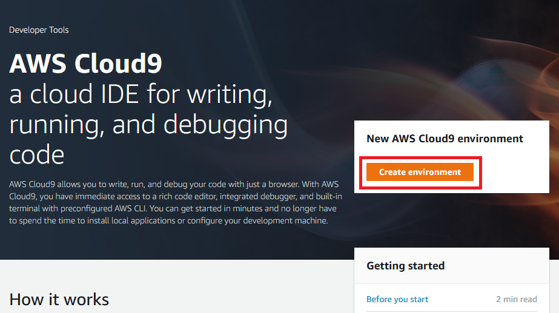
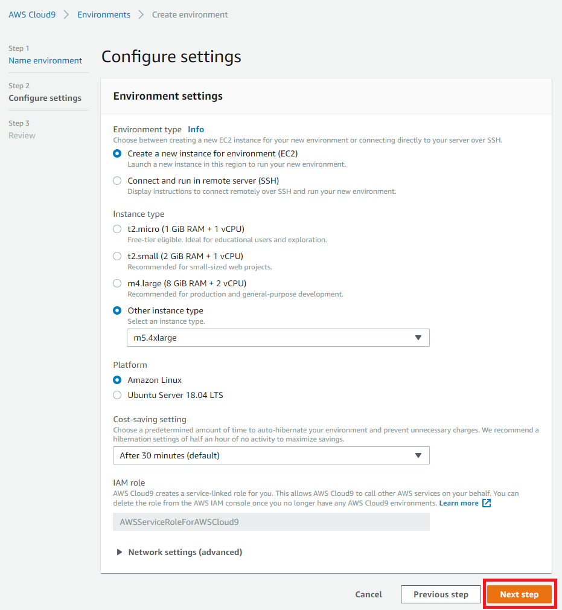
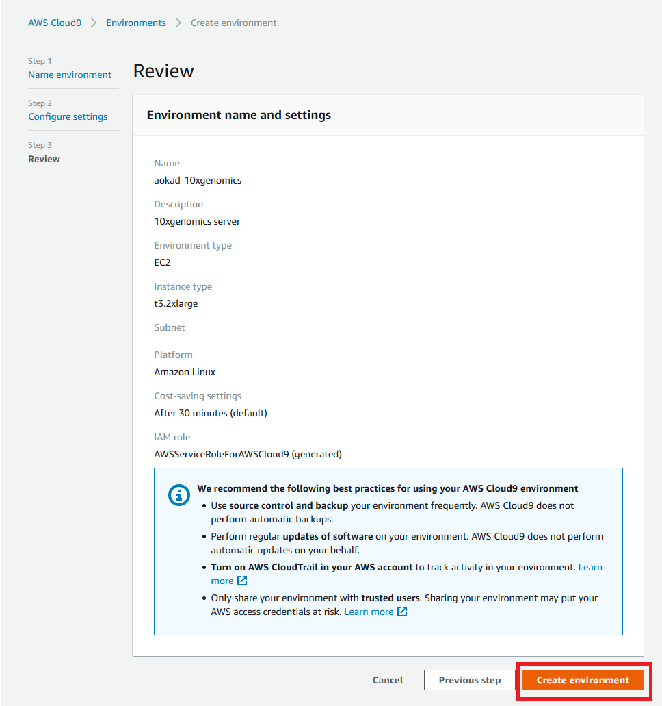
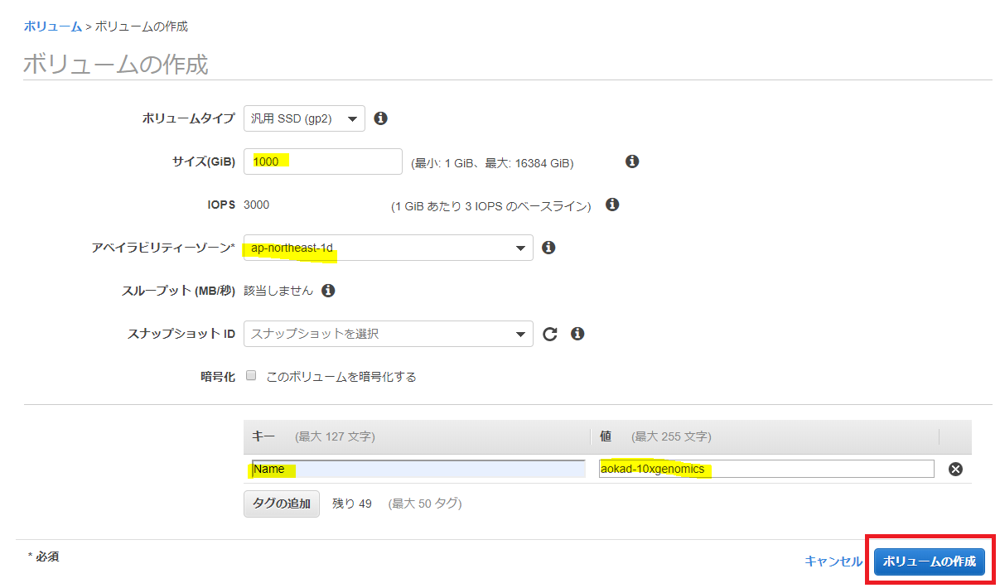
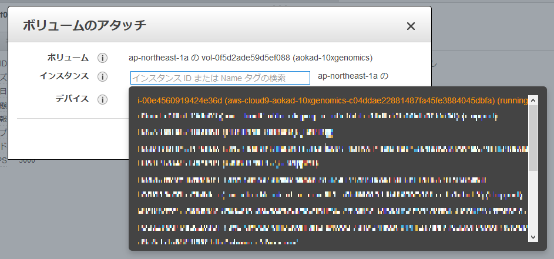
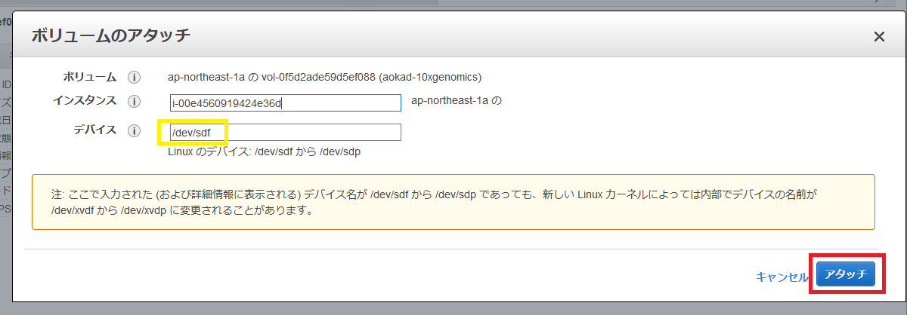
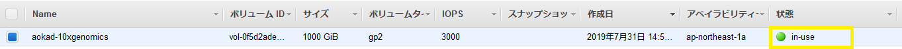
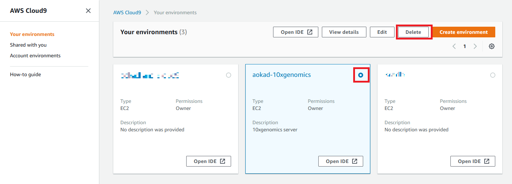

5. AWS Cloud9 の使用方法¶
5.1. AWS コンソールにログイン¶
https://aws.amazon.com を web ブラウザで開き、「コンソールにサインイン」をクリックします。

次の画面でアカウント、ユーザ名、パスワードを入力します。

AWS マネジメントコンソールで東京リージョンを選択しておきます。

5.2. EC2 インスタンスの起動¶
AWS マネジメントコンソールで Cloud9 サービスを選択します。

「Create environment」をクリックします。


次に cloud9 環境の設定を以下内容で設定してください。
Environment type: “Create a new instance for environment (EC2)”
Instance type: “Other instance type” にチェックをつけて、“t3.2xlarge” を選択
Platform: “Amazon Linux”
Cost-saving setting: "After 30 minutes (Default)
入力出来たら、ページの最後にある「Next step」をクリックします。

確認画面が表示されますので、問題なければ「Create environment」をクリックしてください。

作成が開始されますので、黒い画面が消えるまで待ちます。

このような画面が表示されれば使用可能です。

5.3. ボリュームの追加¶
今回は 1T のボリュームが必要ですので、追加でボリュームを作成します。
AWS マネジメントコンソールで EC2 サービスを選択します。

EC2 ダッシュボードが表示されますので、左端のメニューから「ボリューム」を選択し、「ボリュームの作成」ボタンを押します。

ボリュームタイプ: gp2
サイズ (GiB): 1000
キー: 「タグの追加」を押して行を追加した後、キーに「Name」、値に名前 (任意の英数字) を入力します
入力出来たら、「ボリュームの作成」ボタンを押します。

「閉じる」ボタンを押します。

作成したボリュームは「available」になっています。

次に作成したボリュームを cloud9 環境にアタッチします。
作成したボリュームを選択した後、「アクション」→「ボリュームのアタッチ」の順にクリックします。


アタッチ先が “/dev/sdf” であることを確認して、「アタッチ」ボタンを押します。

状態が「available」から「in-use」になれば成功です。

5.4. work ディレクトリの準備¶

まず、アタッチしたディスクが存在するかを確認します。
$ ls /dev/sdf
/dev/sdf
フォーマットします。
$ sudo mkfs -t ext4 /dev/sdf
mke2fs 1.43.5 (04-Aug-2017)
Creating filesystem with 262144000 4k blocks and 65536000 inodes
Filesystem UUID: 6e3c88af-05e2-4350-935e-6dd91301a047
Superblock backups stored on blocks:
32768, 98304, 163840, 229376, 294912, 819200, 884736, 1605632, 2654208,
4096000, 7962624, 11239424, 20480000, 23887872, 71663616, 78675968,
102400000, 214990848
Allocating group tables: done
Writing inode tables: done
Creating journal (262144 blocks): done
Writing superblocks and filesystem accounting information: done
work ディレクトリにマウントします。
$ sudo mkdir /work
$ sudo mount /dev/sdf /work
$ df -h
Filesystem Size Used Avail Use% Mounted on
devtmpfs 16G 60K 16G 1% /dev
tmpfs 16G 0 16G 0% /dev/shm
/dev/nvme0n1p1 9.8G 5.7G 4.0G 60% /
/dev/nvme1n1 984G 77M 934G 1% /work
work ディレクトリのパーミッションを変更します。
$ touch /work/file1
touch: cannot touch ‘/work/file1’: Permission denied
$ whoami
ec2-user
$ sudo chown ec2-user /work
$ touch /work/file1
$ ls -l /work
total 16
-rw-rw-r-- 1 ec2-user ec2-user 0 Jul 31 06:51 file1
drwx------ 2 root root 16384 Jul 31 06:50 lost+found
5.5. 片付け¶

5.5.2. cloud9 の環境を削除する¶
必要のない場合は削除します。
AWS マネジメントコンソールから cloud9 サービスを選択し、作成した環境を選択した後、「Delete」をクリックします。

確認画面が表示されますので、削除したい環境を十分に確認したらテキストボックスに「Delete」と入力した後、「Delete」ボタンを押します。

アタッチしたボリュームを削除します。

確認画面が表示されますので、内容を確認したら、「はい、削除する」ボタンを押します。